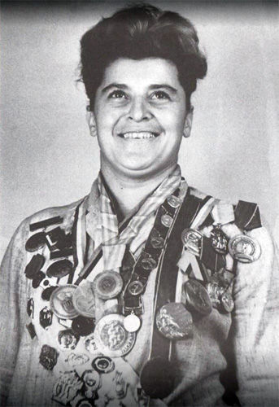

Mzia Dzhugeli (USSR)
1952 Olympic Team Gold
Medalist

Medal Total
Olympic Games: 1
Gold
Mzia (Medea) was born on August 1, 1926, in Kutaisi, Georgia. Her father was a therapist and her mother was a dentist. She took up gymnastics in elementary school. In 1938, during Stalin's purges, her father was arrested and her mother was deported; Mzia went to live with her grandparents in Tbilisi and joined the Spartak club. In 1944, she switched to Dynamo and took part in the Dynamo All-Union Championships in Moscow the following year. In 1945, she learned that her father had died in 1938; in 1948, she was reunited with her mother. She continued to train at Dynamo with coach Grigol Mamardashvili and consistently finished among the top gymnasts at domestic Soviet competitions.
She was a member of the winning USSR women's gymnastics team at the 1952 Helsinki Olympics, making her the first Georgian woman to win an Olympic gold medal. She continued competing for a few more years, and then became the coach of the Georgian national team from 1962 to 1965. She was a USSR team coach from 1965 to 1970. Some of the gymnasts who trained with her were Rusudan Sikharulidze and Paata Shamugiya.
Mzia married Arkady Arkhangelsky in 1947, and the couple eventually had a daughter and a son. Mzia was an internationally-ranked gymnastics judge, and was President of the Georgian Gymnastics Federation for several years in the mid 2000s. Her son was the Georgian Ambassador to Great Britain.
Competition
Results
1940
Tbilisi School Championships: 1st AA (girls)
1946
USSR Championships: 4th Team, 1st V
1947
USSR Championships: 1st V
1949
Transcaucasia Championships: 1st AA
USSR Championships:
4th Team, 5th AA
1950
USSR Championships: 4th Team, 4th AA, 3rd PB
USSR-HUN Dual Meet: 1st Team, 3rd AA, 3rd R, 4th V, 4th B
1951
Georgian Championships: 1st AA
USSR Championships: 3rd Team, 3rd AA, 1st V
1952
Olympic Games: 1st Team, 9th AA, 4th V
USSR Championships: 5th AA
1953
USSR Championships: 5th Team, 5th AA, 1st V, 1st RG
World Youth Festival: 1st Team, 4th AA, 2nd V, 5th UB, 6th B
1954
USSR Championships: 1st V
1955
Georgian Gymnastics Festival: 1st UB
USSR Championships: 1st V
1957
Spartakiad of the Transcaucasian Republics and Moldavia: 1st Team, 1st UB
This page was created on April 3, 2020 and was last updated on May 25, 2026.
© Gymn Forum